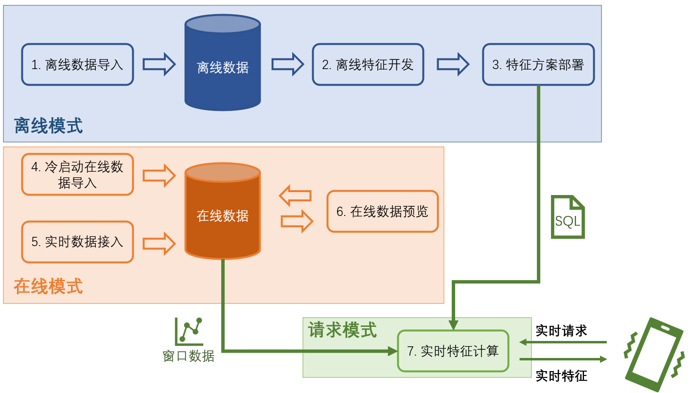

集群版使用流程及执行模式详解
Contents
集群版使用流程及执行模式详解#
OpenMLDB 针对线上线下的特征工程全流程，在不同阶段提供了不同的执行模式。尤其在生产环境下所使用的集群版，针对不同阶段做了较为复杂的执行模式的划分。本文集中说明在集群版 OpenMLDB 中，从特征开发到上线的全流程，及其相应的执行模式。
Note
本文所述内容均以 OpenMLDB 最新发布的版本 v0.4.4 版本为准，部分功能的支持在持续迭代开发中，欢迎关注。
1. OpenMLDB 使用流程概览#
1.1 特征工程开发上线全流程#
我们首先对基于 OpenMLDB 的特征工程的开发和上线全流程做总结概述，以下为使用的典型流程：
离线数据导入：导入离线数据用于离线特征工程开发和调试。
离线开发：开发特征工程脚本，调试到效果满意为止。注意在这个步骤里会牵涉到机器学习模型的联合调试（比如 XGBoost, LightGBM 等），本篇文章内容主要集中于 OpenMLDB 相关部分的特征工程开发。
特征方案部署：得到满意的特征脚本以后，部署上线。
冷启动在线数据导入：在正式上线之前需要导入在线存储引擎的必需的窗口内数据。比如特征方案是对于过去三个月内的数据做特征聚合计算，那么冷启动就需要导入之前三个月的数据。
实时数据接入：系统上线以后，随着时间推移，需要汇入最新数据来维持窗口计算逻辑，因此需要进行实时数据接入。
在线数据预览（可选）：可以通过支持的 SQL 命令进行线上数据的预览检查。
实时请求服务：方案部署，并且数据正确接入以后，即得到一个可以相应在线请求的实时特征计算服务。
1.2 集群版执行模式概览#
由于离线和线上场景的操作数据对象不同，其底层的存储和计算节点亦不同。因此，OpenMLDB 设置了几种不同的执行模式来支持完成以上步骤。以下表格总结了各个步骤所使用的执行模式，稍后将会详细介绍关于执行模式的重要概念。
步骤 |
执行模式 |
开发工具 |
说明 |
|---|---|---|---|
1. 离线数据导入 |
离线模式 |
CLI |
- |
2. 离线特征开发 |
离线模式 |
CLI |
- 支持 OpenMLDB 所有的 SQL 语法 |
3. 特征方案部署 |
离线模式 |
CLI |
- |
4. 冷启动在线数据导入 |
在线模式 |
CLI，导入工具 |
- CLI 使用 |
5. 实时数据接入 |
在线模式 |
REST APIs, Java/Python SDK |
- 第三方数据源调用 OpenMLDB 的相关数据插入 API，引入实时数据 |
6. 在线数据预览（可选） |
在线模式 |
CLI, Java/Python SDK |
- 目前仅支持 |
7. 实时特征计算 |
请求模式 |
REST APIs, Java/Python SDK |
- 支持 OpenMLDB 所有的 SQL 语法 |
从以上的总结表格上可以看到，执行模式分为 离线模式，在线模式，以及请求模式。在后面的章节中，我们将对这几种模式展开详细介绍。下图总结示意了全流程开发和对应的执行模式。

1.3 单机版执行模式说明#
虽然本文集中讲解集群版，但是有必要也简单介绍单机版的执行模式。单机版的执行模式相对简单，主要其离线数据和在线数据的存储和计算节点统一，因此单机版并不区分离线模式和在线模式。即我们可以直观的理解为，在 CLI 下，单机版并没有执行模式的概念，任何可以支持的 SQL 语法均可以在 CLI 下直接运行。因此，单机版特别适合用来快速试用或者实验学习 SQL 使用。在实时特征计算阶段，单机版和集群版一样，依然运行于在线请求模式下。
Note
如果你只是在非生产环境想试用 OpenMLDB，或者学习实验相关 SQL，强烈建议使用单机版，可以更加快捷方便的部署体验。
2. 离线模式#
按照之前总结，集群版的离线数据导入、离线特征开发、特征方案部署上线均在离线模式下执行。离线模式是针对离线数据进行管理和计算，所涉及到的计算节点是由针对特征工程优化的 OpenMLDB Spark 发行版所支持，存储节点支持 HDFS 等常见存储系统。
离线模式有以下主要特点：
离线模式支持所有 OpenMLDB 提供的 SQL 语法，包括扩展优化的
LAST JOIN,WINDOW UNION等复杂 SQL 语法。离线模式的部分 SQL 运行是基于非阻塞式的异步执行，包括
LOAD DATA,SELECT, 以及SELECT INTO命令。非阻塞式执行的 SQL 执行是由内部的 TaskManager 进行管理，可以通过
SHOW JOBS,SHOW JOB,STOP JOB命令进行查看和管理。
Tip
和很多关系型数据库系统不同，SELECT 在离线模式下为异步执行。因此在离线特征开发阶段，强烈建议使用 SELECT INTO 语句进行开发调试，可以将结果导出到文件，方便进行查看。
特征方案部署的命令（DEPLOY）亦在离线模式下执行。其部署规范对于 SQL 还有一定的限制，详细可以参阅 OpenMLDB SQL上线规范和要求。
离线模式可以通过以下形式设置：
CLI：
SET @@execute_mode='offline'；CLI 启动以后的默认模式也为离线模式。REST APIs, Java/Python SDK：不支持离线模式
3. 在线模式#
冷启动在线数据导入、实时数据接入、以及在线数据预览在在线模式下执行。在线模式主要是针对线上数据进行管理和预览，线上数据的存储和计算是由 tablet server 支持。
在线模式有以下主要特点：
在线数据导入（
LOAD DATA）和离线模式下一样，属于非阻塞式的异步执行 SQL，其余均为同步执行。在线模式目前仅支持简单的
SELECT列相关操作来查看相关数据，并不支持复杂的 SQL 查询。因此在线模式并不支持 SQL 特征的开发调试，相关开发工作应该在离线模式或者单机版进行。
在线模式通过以下形式进行设置：
CLI：
SET @@execute_mode='online'REST APIs, Java/Python SDK：默认只支持在线模式下执行，无需进行设置。
4. 请求模式#
在特征脚本被部署以及接入线上数据以后，实时特征计算服务就已经准备就绪，可以通过请求模式来进行实时特征抽取。请求模式在 REST APIs 以及 SDK 下支持。请求模式是 OpenMLDB 特有的支撑线上实时计算的模式，和常见数据库的 SQL 查询非常不同。
请求模式需要三个输入：
SQL 特征脚本，即为特征部署上线过程中所使用的 SQL 脚本，其规定了做特征抽取的计算逻辑。
在线数据，即为冷启动导入或者实时接入的线上数据，一般其为配合 SQL 的窗口计算的最新数据。比如 SQL 脚本的聚合函数会定义一个最近三个月的时间窗口，那么在线存储就需要保留相应的最新三个月数据。
实时请求行（a request row），包含了当前正在发生的实时行为，用于实时特征抽取，比如反欺诈场景下的刷卡信息，或者是推荐场景下的搜索关键字等。
基于这三个输入，对于每一个实时请求行，请求模式都会返回一条特征抽取的结果。其计算逻辑为：请求行会依据 SQL 脚本的逻辑（如 PARTITION BY, ORDER BY 等），被虚拟的插入在线数据表格的正确位置中，然后只针对该行进行特征聚合计算，返回唯一对应的抽取结果。下图直观的解释了在线请求模式的运算过程。

请求模式通过以下形式支持：
CLI：不支持
REST APIs：支持单行或者多行 request rows 的请求，详见：REST APIs
Java SDK：支持单行或者多行 request rows 的请求，详见：Java SDK 快速上手
Python SDK：仅支持单行的 request row 请求，详见：Python SDK 快速上手